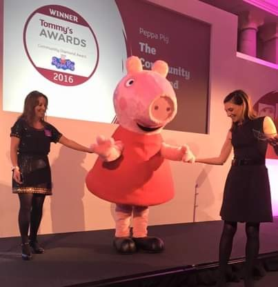

Peppa Pig Introduction
Peppa Pig is a British preschool animated television series by Astley Baker Davies. The show follows Peppa, an anthropomorphic female piglet, and her family, as well as her peers portrayed as other animals.
The show first aired on 31 May 2004. The seventh season began broadcasting on 5 March 2021. Peppa Pig has been broadcast in over 180 countries.

Different Voices
Peppa herself has been voiced by several different performers through the years. Lily Snowden-Fine provided her voice in season one and Cecily Bloom in season two, then Harley Bird, five years old when she started, acquired the role for thirteen years until stepping down after season six.
She was replaced by Amelie Bea Smith. John Sparkes, Morwenna Banks, Richard Ridings, Oliver May and Alice May also provide voices.

Achievements
On 31 December 2019, Hasbro acquired Entertainment One, including the Peppa Pig franchise, for a US$3.8 billion deal.
On 16 March 2021, it was announced that the series was renewed until 2027, with the original creators and studio (Astley Baker Davies) replaced by Karrot Entertainment (producers of Sarah & Duck).